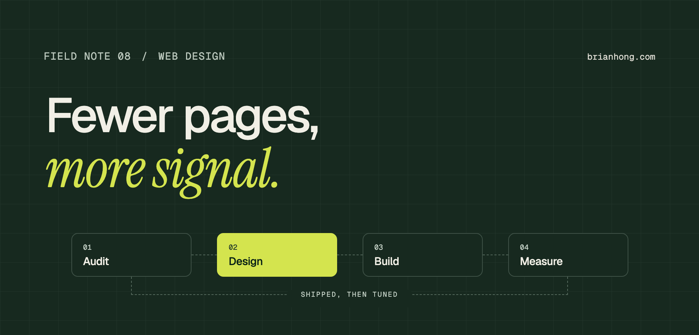
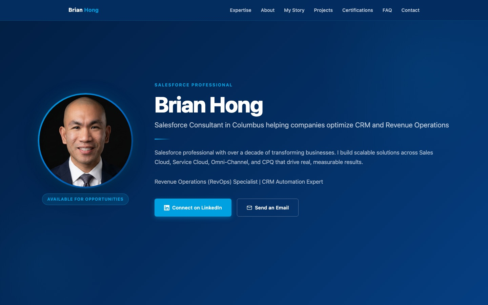
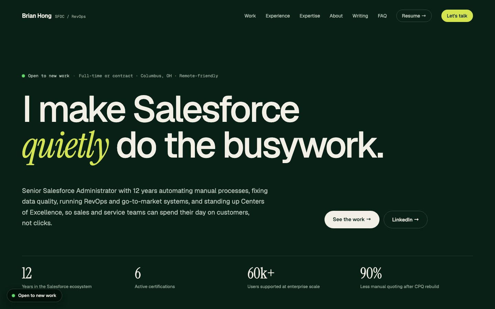

How I designed and built brianhong.com
A personal site cut down to a few pages that each do one job. Plain HTML, no framework, built for people, search, and AI.

The first version of this site did what most personal sites do. It said everything, on a lot of pages. There was a blue gradient hero, a circular headshot, seven navigation links, a dozen case study pages, and two long SEO articles. It had all the information and almost none of the signal.
The redesign started with one question: who opens this site, and what do they need in the first ten seconds? The answer shaped every decision after that, from cutting pages to the type scale.
I designed and built it myself, in plain HTML and CSS, hosted on Vercel. This note walks through the decisions, because the same approach works for small business and nonprofit sites, which I also take on.
The brief: who the site is for
- Recruiters and hiring managers Need the title, years, certifications, and proof in one scroll, plus a resume link that’s always visible.
- Ops and sales leaders Have a messy org and want to know if I’ve fixed one like it. They need outcomes, not a list of tools.
- Search engines and AI assistants Need clear entities and consistent facts on every page, so the answer to ‘who is Brian Hong’ is the same everywhere.
Before and after


The old hero led with a name and a list of labels. The new one leads with what I do in plain language, a status line saying I’m open to work, and four numbers a recruiter can check in a few seconds.
Information architecture: fewer pages, one job each
Twelve legacy pages were folded in: case studies became cards on the homepage, the long SEO guides became the FAQ, and the old blog became field notes. Every page that’s left has one job and one search intent.
Nothing was deleted without a redirect. Each retired URL gets a permanent 301 to the page that replaced it, so old links and search rankings carry over.
A small visual system
- Color in OKLCH Three working colors: a deep green ground, a warm cream, and one lime accent saved for things that matter. OKLCH keeps lightness consistent across tints, so contrast is predictable.
- Three typefaces, three jobs Geist for reading, Geist Mono for labels and metadata, and Instrument Serif italic for a single word of emphasis per headline.
- Fluid type and spacing Headlines and padding scale with clamp() instead of breakpoints, so the layout holds from a phone to a wide monitor.
- Repeatable pieces Stat rows, outcome pills, numbered lists, and a field-note template, so each new page is assembled, not designed from scratch.
The note images, like the one at the top of this page, come from the same system: one HTML template rendered to PNG, so every share card matches.
Built without a framework
The site is static HTML with inline styles and a few small scripts: a mobile menu toggle, a filter on the field notes page, and an email link that’s assembled on click to keep scrapers out. There’s no build step and no client-side framework, so pages are light and nothing breaks when dependencies age.
Layouts use CSS grid with auto-fit columns, so cards reflow without media queries. The few breakpoints that exist handle the navigation and the field-note table of contents.
SEO, AEO, and GEO from the start
- One entity everywhere Every page carries the same Person record in JSON-LD with a shared @id, so search engines connect the pages to one person with one job title.
- Answers in the markup FAQ sections use FAQPage schema, field notes use BlogPosting with breadcrumbs, and answers are written to stand alone when quoted.
- llms.txt A plain-text summary of who I am, what I do, and which page answers what, written for AI assistants that read it.
- Titles by intent Each page targets one phrase: the homepage for Senior Salesforce Administrator and RevOps, the about page for consultant, field notes for their topic.
- Canonicals and sitemap Every page declares its canonical URL, and the sitemap lists only live pages with real last-modified dates.
Accessibility details
Visible focus outlines in the accent color, a menu button that reports its state with aria-expanded, real headings in order, alt text on every image, and width and height on images so the page doesn’t jump while it loads. Body text keeps line lengths short enough to read comfortably.
What this means for your site
I take on a small number of website projects for small teams and nonprofits: a clear structure, a simple visual system, clean HTML that’s easy to maintain, and the technical SEO done properly from the first page. If your site has grown into a pile of pages nobody owns, get in touch.
Frequently asked questions
Who designed and built brianhong.com?
Brian Hong designed and built brianhong.com himself, in hand-written HTML and CSS, hosted on Vercel. The redesign launched in September 2026.
Why build a site without a framework?
A small content site doesn’t need one. Static HTML loads quickly, has no build step to maintain, and keeps working for years without dependency updates.
How do you redesign a site without losing search rankings?
Map every old URL to the page that replaces it and add a permanent 301 redirect for each one. Keep canonical tags accurate, update the sitemap to list only live pages, and resubmit it in Search Console.
Does Brian Hong build websites for other organizations?
Yes. He takes on a small number of website design and build projects for small teams and nonprofits, alongside his Salesforce work.